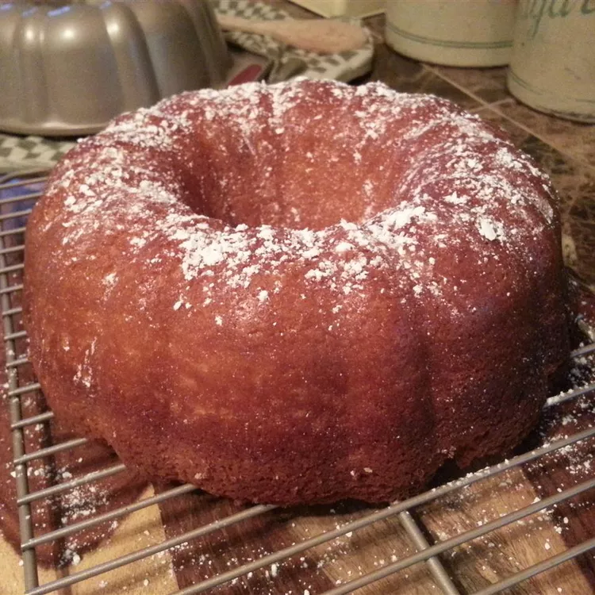

OMG Becky have you tried the Beer cake?

Delicious beer cake made with just cake mix, pudding mix, eggs,
oil, and, of course, beer. Try it and see if your friends can
guess what's in it.
Ingredients
- cooking spray
- 1 tablespoon all-purpose flour, or as needed
- 1 (15.25 ounce) package yellow cake mix
- 1 (3.5 ounce) package instant vanilla pudding mix
- 1 cup beer
- ¼ cup vegetable oil
- 4 large eggs
Steps
- Preheat the oven to 350 degrees F (175 degrees C). Spray a 10-inch Bundt pan with cooking spray, then dust bottom and sides with flour.
- Combine cake mix and pudding mix in a large bowl. Add beer and vegetable oil and mix lightly with an electric mixer. Add 4 eggs and beat at high speed until mixture is thick, creamy, and smooth. Pour batter into the prepared pan.
- Bake in the preheated oven until a toothpick inserted in the center comes out clean, about 55 minutes. Cool in pan for 10 minutes, then turn out onto a wire rack and cool completely. Frost as desired.